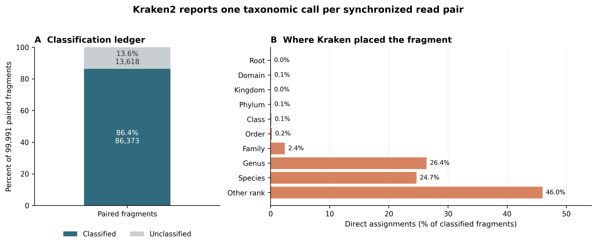
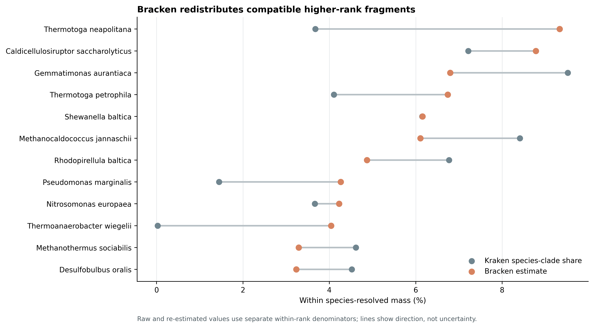
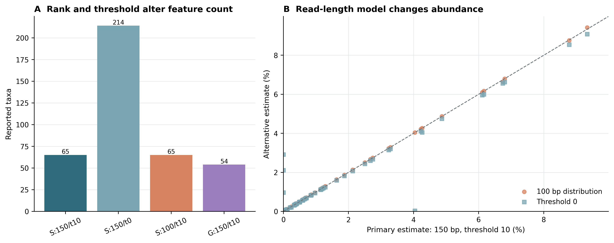

options(timeout = 600)
base_url <- "https://raw.githubusercontent.com/petemeng/metagenomics-best-practices/e219a2cd01609cc208a89e291cbd363ed7f2fbd8/"
files <- read.delim(paste0(base_url, "examples/16/files.tsv"))
for (i in seq_len(nrow(files))) {
path <- files$path[i]
dir.create(dirname(path), recursive = TRUE, showWarnings = FALSE)
if (!file.exists(path)) {
download.file(paste0(base_url, files$source[i]), path, mode = "wb")
}
}Kraken2 + Bracken：k-mer 分类与丰度重估
学习目标：从 clean paired FASTQ 生成可审计的 Kraken2 standard report 与 Bracken 物种丰度表；分清 read、paired fragment、direct assignment、clade count 和 abundance estimate；正确选择 Bracken 的 rank、read length 与 threshold；保留数据库、未分类片段和参数敏感性边界。
真实数据：71-strain MOCK1 DNA 的 Illumina HiSeq 3000 runERR9765746，ENA projectPRJEB52977、sampleSAMEA14435832(Meslier 等 2022年)。输入是 fastp 后保留的 99,991 个同步 read pairs；R1/R2 分别包含 14,974,589 与 14,835,184 bases，压缩文件 SHA-256、记录数和 pair-ID hash 均在运行前复核。
预计资源：本次固定的 Standard-8 索引安装后为 8.64 GB，Kraken2 实测峰值内存 7.77 GiB。建议分配 8 核、12–16 GB RAM，并预留至少 20 GB 磁盘同时容纳 5.54 GiB 压缩包、索引和临时输出。完整 Standard 或core_nt数据库的磁盘与内存需求会高得多，不能套用这里的 8 GB 预算。没有服务器时，可用 Standard-8 在 16 GB 内存工作站运行小样本；生产队列应提交到 HPC 或合规云，并让每个作业独占足以加载索引的内存。
提示重分配增加物种计数，但没有增加原始序列证据
先读清 Kraken2 的层级计数，再解释 Bracken 重分配；不要把模型估计当成原始物种 read counts。
Kraken2 分类与 Bracken 丰度，回答的是两个问题
Kraken2 论文 Figure 1a–c 展示了 k-mer、minimizer、spaced-seed mask、compact hash 与 lowest common ancestor（LCA，最低共同祖先）的关系 (Wood 等 2019年)。本次数据库的实际参数是 k = 35、l = 31：每条 read 产生一串重叠 35-mers，每个 35-mer 由 31 bp minimizer 查询 compact hash table，命中的 taxonomy evidence 再共同决定 read 或 read pair 的分类节点。
Bracken 论文 Figure 1 则从 taxonomy tree 上的 counts 出发：高层级节点上的片段不能直接当作 species abundance，于是利用数据库预计算的 read-length-specific 分布，把 family/genus 等节点的兼容质量向下分到 species，同时把 strain-level 质量向上汇总到 species (Lu 等 2017年)。它不重新读取 FASTQ，也不重新比对。
R1 + R2 FASTQ
↓ Kraken2: minimizer evidence + taxonomy voting
one call per paired fragment
├── unclassified
└── classified at root / family / genus / species / strain / ...
↓ standard Kraken report + database150mers.kmer_distrib
Bracken: rank-specific probabilistic redistribution
↓
species estimates under an explicit threshold这条链必须保存两张表：Kraken report 回答“片段落在 taxonomy tree 的哪里”，Bracken table 回答“在指定 rank、read length 和 threshold 下，组成质量如何重估”。后者不能覆盖前者。
重分配增加物种计数，但没有增加原始序列证据
Bracken 把兼容的高层级分类质量分配到目标层级，使丰度估计更完整；新分配的数量仍来自同一批输入，而不是额外观测到的物种特异 reads。本例的 24,156 个重分配片段应与原 Kraken 层级计数分开保留，便于看清结果依赖模型的程度。
read-length 分布与数据库预计算条件不匹配时，重分配假设也会变化。应检查实际 clean reads 的长度，而不是只使用测序仪名义读长。比较两个样本时还要保留未分类比例；只对已分类物种闭合到 100%，可能把参考覆盖差异隐藏起来。
下载本例数据与分析代码
数据与代码清单列出了本例的输入表、分析脚本和环境文件（约 0.3 MiB）。本清单不含原始 FASTQ 或大型数据库；是否需要它们取决于下文的分析起点。清单中的已计算结果仅供核对；读取结果表不等于重新运行统计模型或上游工具。
在新建文件夹中运行下面的 R 代码，下载完成后即可按正文中的相对路径读取文件。需要核验文件版本时，可使用带完整性检查的下载脚本。
先守住 pair-level 分类记录表

Kraken2 日志中的 99,991 sequences 指 99,991 个 paired fragments，而不是 199,982 条 mates。每个 pair 在 per-fragment 输出中只有一行，两端的长度和 hit list 以分隔符保留；standard report 的 root clade count 与 per-fragment C 行数完全一致。
| Ledger item | Fragments | Percent of all pairs |
|---|---|---|
| Classified | 86,373 | 86.3808% |
| Unclassified | 13,618 | 13.6192% |
| Total | 99,991 | 100.0000% |
对 classified fragments，Kraken 最终直接落点并不都在 species：
| Direct assignment rank | Fragments | Percent of classified |
|---|---|---|
| Genus | 22,778 | 26.3717% |
| Species | 21,299 | 24.6593% |
| Family | 2,085 | 2.4139% |
| Order or broader named rank | 513 | 0.5940% |
| Other rank | 39,698 | 45.9611% |
重要Direct count 与 clade count 是两列，不是两种写法
standard report 的第二列是该 clade 及全部 descendants 覆盖的 fragments，第三列才是直接落在当前节点的 fragments。父节点的 clade count 已包含子节点；沿整棵树相加会重复计算同一个 fragment。只有 direct assignment 加上 unclassified 才能做全样本守恒检查。
Bracken 改变的是 rank-level estimate

主分析固定 rank = S、read length = 150、threshold = 10。Kraken report 有 214 个非零 species rows；Bracken 只让 species-clade count 大于 10 的 65 个 taxa 进入重估。最终逐行整数账本如下：
| Quantity | Fragments / taxa | Interpretation |
|---|---|---|
| Kraken species rows before threshold | 214 taxa | report 中所有非零 species clades |
| Species retained above threshold | 65 taxa | 进入主模型的 species |
| Kraken-assigned mass retained | 59,991 | 这 65 个 species 的 clade counts |
Bracken added_reads |
24,156 | 最终各行整数化后新增的兼容 fragments |
Bracken new_est_reads |
84,147 | 65 行重估 fragments 合计 |
| Unclassified | 13,618 | 不进入 Bracken composition |
丰度最高的物种并不总是“原本 species count 最高”的物种；近缘 genomes 共享的序列可能先落在 genus/family，再被重新分配：
| Species | Kraken species-clade | Added | New estimate | Bracken fraction |
|---|---|---|---|---|
| Thermotoga neapolitana | 2,205 | 5,651 | 7,856 | 9.333% |
| Caldicellulosiruptor saccharolyticus | 4,329 | 3,062 | 7,391 | 8.781% |
| Gemmatimonas aurantiaca | 5,712 | 11 | 5,723 | 6.799% |
| Thermotoga petrophila | 2,462 | 3,212 | 5,674 | 6.741% |
| Shewanella baltica | 3,688 | 1,495 | 5,183 | 6.158% |
| Methanocaldococcus jannaschii | 5,047 | 95 | 5,142 | 6.109% |
| Pseudomonas marginalis | 867 | 2,722 | 3,589 | 4.264% |
| Thermoanaerobacter wiegelii | 15 | 3,387 | 3,402 | 4.042% |
Thermoanaerobacter wiegelii 的 15 个 Kraken species-clade fragments 被重估为 3,402，正说明 Bracken 输出不是“Kraken 直接物种 reads”的换列显示。如此大的重分配必须与数据库版本、近缘种结构和其他参数分支一起报告。
Bracken 日志给出 24,182 个 distributed fragments，而最终表中逐行 added_reads 合计为 24,156；26 个 fragments 的差异来自逐 taxon 整数化。另有 275 个低于阈值的 species fragments 被丢弃、1,925 个 fragments 因没有合格 descendant 而未分配。13,618 个 unclassified fragments 已经不在 86,373 个 classified fragments 中，不能再从后者重复扣除。正确的 classified-mass 对账是：
\[ 86{,}373 = 84{,}147 + 275 + 1{,}925 + 26_{\mathrm{rounding}}. \]
threshold 比本次 read-length 分支更敏感

| Configuration | Reported taxa | Kraken mass | Added | Estimated | Total variation from primary |
|---|---|---|---|---|---|
| Species, 150 bp, t = 10 | 65 | 59,991 | 24,156 | 84,147 | 0.000000 |
| Species, 150 bp, t = 0 | 214 | 60,266 | 26,016 | 86,282 | 0.066305 |
| Species, 100 bp, t = 10 | 65 | 59,991 | 24,154 | 84,145 | 0.001340 |
| Genus, 150 bp, t = 10 | 54 | 83,642 | 788 | 84,430 | not comparable across ranks |
R1 和 R2 的平均 clean read length 分别为 149.76 与 148.37 bp，范围为 50–150 bp，所以 150 bp distribution 是与建库读长最接近的主模型。换成 100 bp 后物种数不变，物种组成的 total variation distance 只有 0.00134；这说明当前样本对这个分支较稳，不说明 -r 可以随意填写。
相反，把 threshold 从 10 改为 0 会把 65 个物种扩展到 214 个，total variation distance 为 0.066305。新增行包含真实低丰度候选、近缘数据库分配尾部与噪声可能性的混合物；-t 10 也不是生物学检出限，只是这次主分析采用的稳定性规则。
先锁定输入、版本和算力边界
环境配置与完整运行说明
算力与存储门槛
| Task | CPU | RAM | Disk | This run |
|---|---|---|---|---|
| Download archive | 1–16 connections | <1 GB | 5.54 GiB | checksum after resume |
| Extract Standard-8 | 1–2 | <1 GB | 8.64 GB installed | 1:21.49 |
| Kraken2 paired classification | 8 | 12–16 GB recommended | per-fragment output + report | 0:06.77; 7.77 GiB RSS |
| Bracken species estimate | 1 | <1 GB | small tables | 0:00.27; 24 MiB RSS |
| Network-free routine QA | 1–4 | <2 GB | frozen bundle only | 73/73 checks |
一次性运行保留压缩包、解压索引和临时 output 时，20 GB 是实用下限；多样本并行时，最容易超配的是“每个 sample job 都加载一份 8 GB index”。应按节点总内存限制并发数。
本次证据从四个入口核对：data/small/16-source-manifest.tsv 固定 clean FASTQ lineage，data/small/16-kraken-bracken-frozen/run-summary.json 汇总一次性运行，data/small/16-kraken-bracken-frozen/file-checksums.sha256 锁定全部 frozen payloads，data/small/16-data-NOTICE.txt 记录数据库、软件与解释边界。任何一个入口改变，都应重新运行验证，而不是只替换图。
安装固定环境
# 推荐：从仓库的 direct-URL lock 重建 187-package 环境
mamba create \
-p "${HOME}/miniconda3/envs/metagenome-kraken-2026.07" \
--file env/kraken-linux-64.lock
# 或从可读的版本合同求解
mamba env create -f env/kraken.yml
KRAKEN_ENV_PREFIX="${HOME}/miniconda3/envs/metagenome-kraken-2026.07"
"${KRAKEN_ENV_PREFIX}/bin/kraken2" --version
"${KRAKEN_ENV_PREFIX}/bin/bracken" -v固定环境得到 Kraken2 2.17.1、Bioconda Bracken package 3.1p1、Python 3.12.13。Bracken wrapper 内部的 VERSION 仍打印 Bracken v3.0.1；这里同时记录 package identity 与 CLI-reported string，不把其中一个静默改写成另一个。
下载 release-specific 数据库
export PROJECT_ROOT="$PWD"
export DB_ROOT=/absolute/path/outside/git/metagenome-kraken2
export DB_MANIFEST=data/small/16-database-manifest.tsv
# 支持续传、全错误重试、低速失败和 checksum-before-promotion
db/download_db.sh audit
db/download_db.sh download kraken2-standard8-20260626
db/download_db.sh verify kraken2-standard8-20260626
ARCHIVE="${DB_ROOT}/archives/kraken2-standard8-20260626/k2_standard_08_GB_20260626.tar.gz"
KRAKEN_DB_DIR="${DB_ROOT}/standard-8-20260626"
mkdir -p "${KRAKEN_DB_DIR}"
tar -xzf "${ARCHIVE}" -C "${KRAKEN_DB_DIR}"
# 先核对 publisher MD5，再核对归档内 17 个文件
printf '%s %s\n' \
7685f43cce057c2ca18511c925399b72 "${ARCHIVE}" | md5sum --check
(cd "${KRAKEN_DB_DIR}" && \
md5sum --check "${PROJECT_ROOT}/data/small/16-standard8-files.md5")固定归档为 5,946,578,575 bytes，MD5 7685f43cce057c2ca18511c925399b72，本地再记录 SHA-256 b17d05ca1459564b49b63d014c4b2ee6ebe1ca0143e6c184e0dfd6d940a55981。它包含 RefSeq archaea、bacteria、viral、plasmid、human 与 UniVec_Core，但 Kraken hash 被 cap 到 8 GB；官方明确说明小索引以 sensitivity/accuracy 换内存。正式研究不能把它当作 full Standard 或 core_nt 的同义词。
校验 clean FASTQ lineage
R1=data/raw/article13/ERR9765746_clean_R1.fastq.gz
R2=data/raw/article13/ERR9765746_clean_R2.fastq.gz
sha256sum "${R1}" "${R2}"
# ce438de2...32101 ERR9765746_clean_R1.fastq.gz
# 207d080c...fe459 ERR9765746_clean_R2.fastq.gz
for fq in "${R1}" "${R2}"; do
printf '%s\t' "${fq}"
gzip -cd "${fq}" | awk 'END {print NR/4}'
done
# 每个 mate 都应为 99,991 records完整 paired-ID 检查还要逐行确认 R1/R2 去除 /1、/2 后的 ID 和顺序一致。这里的 ENA IDs 形如 ERR9765746.1；末尾 .1 是 accession record number，不能误删成 mate suffix。
内联 R 作图环境与函数
packages <- c("readr", "dplyr", "tidyr", "ggplot2", "patchwork", "scales")
missing <- packages[!vapply(packages, requireNamespace, logical(1), quietly = TRUE)]
if (length(missing)) install.packages(missing, repos = "https://cloud.r-project.org")
set.seed(20260721)
pal_pub <- c(
"#0072B2", "#D55E00", "#009E73", "#CC79A7",
"#E69F00", "#56B4E9", "#F0E442", "#999999"
)
scale_color_pub <- function(...) {
ggplot2::scale_color_manual(values = pal_pub, ...)
}
scale_fill_pub <- function(...) {
ggplot2::scale_fill_manual(values = pal_pub, ...)
}
theme_pub <- function(base_size = 12) {
ggplot2::theme_bw(base_size = base_size, base_family = "sans") +
ggplot2::theme(
panel.grid = ggplot2::element_blank(),
axis.text = ggplot2::element_text(color = "black"),
axis.ticks = ggplot2::element_line(color = "black", linewidth = 0.3),
legend.key = ggplot2::element_blank(),
legend.background = ggplot2::element_rect(
fill = scales::alpha("white", 0.7), color = NA
),
plot.title.position = "plot"
)
}
save_pub <- function(plot, file_base, width = 180, height = 105,
units = "mm", dpi = 350, write_tiff = TRUE) {
dir.create(dirname(file_base), recursive = TRUE, showWarnings = FALSE)
ggplot2::ggsave(
paste0(file_base, ".pdf"), plot, width = width, height = height,
units = units, device = grDevices::cairo_pdf
)
ggplot2::ggsave(
paste0(file_base, ".png"), plot, width = width, height = height,
units = units, dpi = dpi, bg = "white"
)
if (isTRUE(write_tiff)) {
ggplot2::ggsave(
paste0(file_base, ".tiff"), plot, width = width, height = height,
units = units, dpi = dpi, compression = "lzw", bg = "white"
)
}
invisible(plot)
}用一次性脚本生成完整证据包
原始 FASTQ、5.54 GiB archive、8.64 GB index 和 per-fragment output 都留在 Git 之外；聚合 reports、资源日志、版本、校验表和 figures 才进入小型证据包。
export PROJECT_ROOT="$PWD"
export KRAKEN_ENV_PREFIX="${HOME}/miniconda3/envs/metagenome-kraken-2026.07"
export DB_ROOT=/absolute/path/outside/git/metagenome-kraken2
bash scripts/run_article16_kraken2_bracken.sh \
--project-root "${PROJECT_ROOT}" \
--environment-prefix "${KRAKEN_ENV_PREFIX}" \
--raw-dir "${PROJECT_ROOT}/data/raw/article16" \
--database-archive "${DB_ROOT}/archives/kraken2-standard8-20260626/k2_standard_08_GB_20260626.tar.gz" \
--database-dir "${DB_ROOT}/standard-8-20260626" \
--frozen-dir "${PROJECT_ROOT}/data/small/16-kraken-bracken-frozen"脚本拒绝覆盖非空的 work/frozen 目录，避免失败重跑把旧结果与新结果混在一起。若只想理解每个命令，下面按执行顺序展开。
把 2017/2019 算法放进 2026 数据库约定
Kraken2 与 Bracken 的核心问题没有过时：一个负责快速 taxonomy placement，一个负责 rank-level abundance re-estimation。需要升级的是“只报工具名”的做法。当前可复现单位至少包括：
Kraken2 version
+ Bracken package and CLI identity
+ exact database release/date/checksum/content/cap
+ k/l and classification parameters
+ paired-fragment counting unit
+ Bracken rank/read length/threshold
+ unclassified and unresolved mass ledger仅写“Kraken2 + Bracken default parameters”无法重现结果，因为数据库 release、cap、read-length distribution 与 threshold 都能改变 feature space 和 abundance。
Standard-8 是算力折中，不是默认真值
本次选 Standard-8 是为了在 12–16 GB RAM 范围展示完整流程。它把 hash cap 到 8 GB，官方数据库页明确提示 sensitivity/accuracy 代价。论文主分析至少应在代表性 samples 上比较：
- fixed Standard-8；
- 同日期或明确日期的 full Standard / 更广数据库；
- 与研究问题相关的 custom database；
- negative controls 与 mock community。
比较时必须固定 input、Kraken2 parameters 和 Bracken parameters，按 taxid 做 lineage-aware crosswalk；数据库改名、split/merge 不能被误写成生物变化。
运行 Kraken2
Kraken2 查询的是 minimizer evidence
对 read 中每个长度为 \(k\) 的窗口，Kraken2 取长度为 \(l\) 的 canonical minimizer，经 spaced-seed mask 和 compact hash 查询数据库。数据库将查询键关联到参考序列 taxonomy 的 LCA。简化表示为：
\[ r \longrightarrow \{m_1, m_2, \ldots, m_q\} \longrightarrow \{t_1, t_2, \ldots, t_q\} \longrightarrow \widehat t_r, \]
其中 \(m_i\) 是 minimizer query，\(t_i\) 是数据库返回的 taxon，\(\widehat t_r\) 是综合 root-to-leaf 支持后得到的分类节点。多个相邻 k-mers 可能共享同一 minimizer，所以支持不能简单解释成独立证据条数。
本次显式设定 --minimum-hit-groups 2，要求至少两个 hit groups 支撑分类；--confidence 0.0 则保留默认 voting boundary。两者控制的是 read-level call，不是 Bracken 的 abundance threshold。
paired-end 的计数单位是 fragment
使用 --paired 时，Kraken2 仍分别扫描两端序列的 minimizers，但把两端 evidence 合并成一个 pair-level call。于是：
- 输入 FASTQ 有 199,982 条 reads；
- Kraken log 和 report 的总量是 99,991 个 paired fragments；
- per-fragment 输出一 pair 一行；
- Bracken 接收 report 后也沿用 fragment counts。
若把结果写成“86,373 reads classified”，读者很可能理解成 86,373 / 199,982，分类率会被错误减半。Methods、结果表和下游 abundance matrix 必须统一写 fragments 或 read pairs。
set -euo pipefail
R1=data/raw/article13/ERR9765746_clean_R1.fastq.gz
R2=data/raw/article13/ERR9765746_clean_R2.fastq.gz
OUT=data/raw/article16/work
FROZEN=data/small/16-kraken-bracken-frozen
mkdir -p "${OUT}" "${FROZEN}/logs"
export LC_ALL=C
export TZ=UTC
export PYTHONHASHSEED=0
/usr/bin/time -v \
-o "${FROZEN}/logs/kraken2-full.resources.txt" \
"${KRAKEN_ENV_PREFIX}/bin/kraken2" \
--db "${KRAKEN_DB_DIR}" \
--threads 8 \
--paired \
--gzip-compressed \
--confidence 0.0 \
--minimum-hit-groups 2 \
--report "${FROZEN}/kraken-report.tsv" \
--output "${OUT}/ERR9765746.kraken.output" \
"${R1}" "${R2}" \
> "${FROZEN}/logs/kraken2-full.log" 2>&1观察到的日志为：
99991 sequences (29.81 Mbp) processed in 0.950s (6316.9 Kseq/m, 1883.24 Mbp/m).
86373 sequences classified (86.38%)
13618 sequences unclassified (13.62%)不要加 --use-mpa-style：Bracken 需要 standard Kraken report。per-fragment output 对排错有价值，但可能包含原始 read ID，且本次约 99,991 行，因此只放受控 scratch，不进入公开 bundle。
注意坑 3：给 Bracken 输入 MPA-style report
Bracken 需要 standard six-column Kraken report。--use-mpa-style 的 lineage table 适合另一类展示，不保留 Bracken 所需的完整树计数结构。
注意坑 4：把 -r 写成 paired insert length
-r 是单条 read 的长度。150 bp paired-end 仍用 -r 150，不是 300，也不是 insert-size peak。trimmed length 很分散时需要 sensitivity 或分层运行。
检查 report 的六列与守恒
standard report 是一棵有重复覆盖的树
Kraken2 standard report 的六列为：
| Column | Meaning |
|---|---|
| 1 | percent of total fragments covered by this clade |
| 2 | fragments in this clade, including descendants |
| 3 | fragments assigned directly to this taxon |
| 4 | rank code |
| 5 | NCBI taxonomy ID |
| 6 | indented scientific name |
若一个 fragment 直接落在 species，它也会同时进入该 genus、family、order 等祖先节点的 clade count。报告适合沿一条 rank 切片或审计树结构，不适合全表求和。--use-mpa-style 会改变 report 形态，不能作为 Bracken 的输入；Bracken 需要完整 standard report。
rank code 也不只 D/K/P/C/O/F/G/S。例如 subspecies、strain 与介于主要 rank 之间的节点会使用扩展 code；图中的 Other rank 是这些直接落点的合计，而不是“没有 taxonomy”。
# 前 12 行，保留 name 前的 taxonomy indentation
sed -n '1,12p' "${FROZEN}/kraken-report.tsv"
# U 行 + root 行应给出全样本分母
awk -F '\t' '$4=="U" || ($4=="R" && $5==1) {
printf "rank=%s\tclade=%s\tdirect=%s\ttaxid=%s\tname=%s\n", \
$4, $2, $3, $5, $6
}' "${FROZEN}/kraken-report.tsv"
# direct assignments 跨所有 report rows 只计一次，应等于 99,991
awk -F '\t' '{sum += $3} END {print sum}' "${FROZEN}/kraken-report.tsv"kraken2-inspect --skip-counts 用于固定数据库自身参数：
"${KRAKEN_ENV_PREFIX}/bin/kraken2-inspect" \
--db "${KRAKEN_DB_DIR}" \
--threads 8 \
--skip-counts \
> "${FROZEN}/database-inspect.txt"本次得到 k=35、l=31、59,403 taxonomy nodes、hash table size 1,399,434,069 和 capacity 2,000,000,000。数据库 inspect 结果应与 release manifest 一起归档。
MOCK1 不是可随意扩写的完整 taxonomy truth
ERR9765746 是真实 71-strain MOCK1 数据，适合检查流程、守恒和已知成员 recovery；但当前 NCBI taxid、数据库同义名、strain/assembly 可用性与论文配方之间需要专门 crosswalk。这里不把所有 214 个 Kraken species rows 强制贴成 TP/FP，也不从一个样本估计普适灵敏度。
如果要做 benchmark，应冻结一张 machine-readable truth table：strain label、expected abundance、assembly accession、当前 taxid、允许的 ancestor match、数据库是否包含该 genome。未进入数据库的成员不能计作 Bracken 算法本身的错误。
注意坑 2：把 report 第二列全表相加
clade count 沿祖先节点重复覆盖。全表相加没有可解释分母；按一个 rank 切片，或使用 direct count 做全树守恒。
运行主 Bracken 模型
Bracken 估计的是条件分配权重
假设 fragment 被 Kraken 放在高层级节点 \(a\)，其下有候选目标 taxa \(i \in D(a)\)。Bracken 利用固定数据库、固定 read length 下预计算的 k-mer assignment distribution，构建非负权重 \(w_{i|a}\)，满足：
\[ w_{i|a} \ge 0, \qquad \sum_{i \in D(a)} w_{i|a} \le 1. \]
rank-level estimate 可概括为：
\[ \widehat n_i = n_i^{\mathrm{Kraken\ clade}} + \sum_a n_a^{\mathrm{eligible}} w_{i|a}. \]
权重来自“该数据库中的 genome 经过指定 read length 模拟后，Kraken 倾向把片段放在哪里”的模型，并结合当前样本中 descendants 的 evidence。数据库没有的 organism 不会被 Bracken 创造出来；reference representation 不均衡也会传进权重。
/usr/bin/time -v \
-o "${FROZEN}/logs/bracken-species-r150-t10.resources.txt" \
"${KRAKEN_ENV_PREFIX}/bin/bracken" \
-d "${KRAKEN_DB_DIR}" \
-i "${FROZEN}/kraken-report.tsv" \
-o "${FROZEN}/bracken-species-r150-t10.tsv" \
-w "${FROZEN}/bracken-species-r150-t10.kreport.tsv" \
-r 150 \
-l S \
-t 10 \
> "${FROZEN}/logs/bracken-species-r150-t10.log" 2>&1输出七列必须保留：
name taxonomy_id taxonomy_lvl kraken_assigned_reads added_reads new_est_reads fraction_total_reads-w 产生与重估结果一致的 hierarchy report，适合 Krona 等 tree-aware 展示；统计矩阵则优先使用 tabular output 中稳定的 taxonomy_id、new_est_reads 和明确记录的 rank。
Bracken 的 package/CLI 版本分歧必须如实保留
Bioconda 包是 3.1p1，上游 wrapper 却输出 Bracken v3.0.1。这不是分析失败，但只记录 bracken -v 会丢掉实际 package identity；只写包版本又会让读者无法复核 CLI。环境 lock、conda metadata、CLI output 三者都保留，Methods 同时写出。
注意坑 6：把 Bracken fraction 当作全部 FASTQ 的比例
主表 fraction 在 84,147 个 reported species estimates 内归一化，不含 13,618 个 unclassified 与 2,226 个 unresolved/discarded/rounding fragments。图注必须写清 denominator。
注意坑 8：删除 Kraken report，只保留 Bracken 表
没有原始 report 就无法重审 unclassified、direct/clade counts、rank placement，也无法在同一 classifier output 上重跑其他 Bracken rank/read-length/threshold 分支。
固定三条敏感性分支
# threshold sensitivity：同一 rank/read length，只改变准入阈值
"${KRAKEN_ENV_PREFIX}/bin/bracken" \
-d "${KRAKEN_DB_DIR}" -i "${FROZEN}/kraken-report.tsv" \
-o "${FROZEN}/bracken-species-r150-t0.tsv" \
-w "${FROZEN}/bracken-species-r150-t0.kreport.tsv" \
-r 150 -l S -t 0
# read-length sensitivity：同一 rank/threshold，只改变 database distribution
"${KRAKEN_ENV_PREFIX}/bin/bracken" \
-d "${KRAKEN_DB_DIR}" -i "${FROZEN}/kraken-report.tsv" \
-o "${FROZEN}/bracken-species-r100-t10.tsv" \
-w "${FROZEN}/bracken-species-r100-t10.kreport.tsv" \
-r 100 -l S -t 10
# rank sensitivity：genus 不能与 species 行数或 proportion 逐行硬比较
"${KRAKEN_ENV_PREFIX}/bin/bracken" \
-d "${KRAKEN_DB_DIR}" -i "${FROZEN}/kraken-report.tsv" \
-o "${FROZEN}/bracken-genus-r150-t10.tsv" \
-w "${FROZEN}/bracken-genus-r150-t10.kreport.tsv" \
-r 150 -l G -t 10若目标是比较 --confidence 或数据库，必须重新运行 Kraken2 再运行 Bracken；只改 Bracken 参数无法审计 read-level classifier boundary。
default confidence 适合展示机制，不足以独立定阳性
当前显式保存 --confidence 0.0 与 --minimum-hit-groups 2。compact hash、共享 minimizers、reference imbalance 与低复杂度片段都可能在低计数尾部留下候选。升级分析应在同一数据库上比较 confidence grid，并至少报告：
- classified fraction；
- mock expected/unsupported taxa；
- negative-control taxa；
- low-count feature persistence；
- top-taxa abundance stability；
- false discovery boundary 的定义。
不能把 confidence 调高后“行数更少”直接等同于“更准确”；sensitivity 与 precision 需要带真值或 controls 的证据。
注意坑 5：把 -t 当成生物学检出限
threshold 决定哪些 taxa 能接受 redistribution。这里 t=0 与 t=10 分别得到 214 与 65 个 species；差异包含真实低丰度与模型尾部，不能用单一数字划分“存在/不存在”。
聚合检查并重建三张图
-t 是模型准入阈值，不是测序检出限
Bracken 的 -t 10 让当前 rank 上 Kraken-assigned count 超过 10 的 taxa 才进入分配。它会同时影响：
- 输出 feature 数；
- 哪些 descendants 能接受高层级 fragments；
- 未能分配的 fragments 数；
- 其余 taxa 的归一化比例。
因此不能先在一个 threshold 下运行、再把输出表简单删到另一个 threshold，声称两者等价。阈值应在全队列固定，并在 mock、negative controls 与生物样本上做统一敏感性。
"${KRAKEN_ENV_PREFIX}/bin/python" \
scripts/validate_article16_kraken2_bracken.py \
--project-root "$PWD" \
--environment-prefix "${KRAKEN_ENV_PREFIX}" \
--frozen-dir data/small/16-kraken-bracken-frozen \
--output-dir results/16-kraken2-bracken \
--figure-dir figuresroutine validation 不读取 FASTQ、不读取大数据库、不联网；它检查 33 个 frozen payload checksums、版本合同、report 算术、四个 Bracken branches、图像尺寸与格式。本次通过 73/73 checks，results/16-kraken2-bracken/validation-summary.json 的 status 为 passed。
从保存表独立重画分类记录表
library(readr)
library(dplyr)
library(ggplot2)
library(patchwork)
ledger <- read_tsv(
"data/small/16-kraken-bracken-frozen/classification-ledger.tsv",
show_col_types = FALSE
) |>
mutate(Status = factor(Status, levels = c("Classified", "Unclassified")))
ranks <- read_tsv(
"data/small/16-kraken-bracken-frozen/rank-assignment.tsv",
show_col_types = FALSE
) |>
arrange(PercentOfClassifiedFragments) |>
mutate(AssignmentRank = factor(AssignmentRank, levels = AssignmentRank))
p_ledger <- ggplot(ledger, aes(x = "Paired fragments", y = Percent, fill = Status)) +
geom_col(width = 0.62) +
geom_text(
aes(label = sprintf("%.1f%%\n%s", Percent, scales::comma(Fragments))),
position = position_stack(vjust = 0.5), color = "white", size = 3.2
) +
scale_fill_manual(values = c(Classified = "#2F6B7C", Unclassified = "#C7CED1")) +
labs(x = NULL, y = "Percent of 99,991 paired fragments", fill = NULL,
title = "A Classification ledger") +
theme_pub()
p_rank <- ggplot(
ranks,
aes(x = PercentOfClassifiedFragments, y = AssignmentRank)
) +
geom_col(fill = "#D7835F") +
geom_text(
aes(label = sprintf("%.1f%%", PercentOfClassifiedFragments)),
hjust = -0.08, size = 3
) +
scale_x_continuous(expand = expansion(mult = c(0, 0.15))) +
labs(x = "Direct assignments (% of classified fragments)", y = NULL,
title = "B Where Kraken placed the fragment") +
theme_pub()
p_classification <- p_ledger + p_rank + plot_layout(widths = c(0.8, 1.3))
save_pub(p_classification, "figures/16-kraken-classification-ledger")独立重画 redistribution 与 parameter sensitivity
-r 是单条 read length，不是 insert size
Standard-8 随包提供 50、75、100、150、200、250 和 300 bp 的 Bracken distributions。这里的 150 是单端 read 的名义长度，不是两端相加的 300 bp，也不是 fastp 报告的 265 bp insert-size peak。
若 trimming 后长度差异很大，应先画 read-length distribution：
- 长度集中在某个已提供 grid 时，用最接近的 distribution，并做相邻长度敏感性；
- 长度横跨多个 grid 时，可按长度 strata 分别运行再合并 counts，或为研究数据库构建更合适的 distribution；
- 不要因为 paired-end 就把
-r写成2 × read length。
fraction_total_reads 不是全 FASTQ 分母
主输出的 new_est_reads 合计为 84,147，而 fraction_total_reads 合计为 0.99970。这个 fraction 实际上在被报告的 rank-level estimates 内归一化；13,618 个 unclassified fragments、阈值丢弃和无法分配的质量不在它的分母中。五位小数逐行输出还会产生约 \(10^{-3}\) 量级的求和偏差。
因此至少保留三层数据：
all paired fragments = 99,991
├── Kraken unclassified = 13,618
└── Kraken classified = 86,373
├── Bracken reported species estimates = 84,147
└── threshold / no eligible descendant / integer rounding = 2,226跨样本堆积图可以在同一 Bracken rank 内再归一化，但 Methods 必须说明这是一张 classified-and-resolved composition；不能把它写成“占全部 reads 的百分比”。
分类、丰度、绝对负载和菌株不是同一个结论
| Claim | This workflow provides | Still required |
|---|---|---|
| taxon-compatible sequence evidence | Kraken minimizer/LCA call | controls and database sensitivity |
| rank-level relative composition | Bracken estimate under fixed model | stable denominator across samples |
| absolute microbial load | no | spike-in, qPCR, flow cytometry or other load measurement |
| viable or active organism | no | culture, RNA, PMA or other activity evidence |
| strain identity/transmission | no | strain-resolved variants, coverage and epidemiology |
主表中有 11 个 Homo sapiens species-clade fragments，但这一个数字不能证明样本存在可报告的人源污染：Standard-8 包含 human reference，默认 confidence、近缘/低复杂度 evidence 和 capped database 都可能影响边界。host-removal report、negative control、per-fragment alignment 审计与 database/confidence sensitivity 应共同决定解释，而不是看一个低计数 taxonomy row。
library(tidyr)
redistribution <- read_tsv(
"data/small/16-kraken-bracken-frozen/redistribution-audit.tsv",
show_col_types = FALSE
) |>
mutate(
KrakenShare = 100 * KrakenSpeciesCladeFragments /
sum(KrakenSpeciesCladeFragments),
BrackenShare = 100 * BrackenFraction
) |>
slice_max(BrackenShare, n = 12, with_ties = FALSE) |>
arrange(BrackenShare) |>
mutate(Name = factor(Name, levels = Name))
p_redistribution <- ggplot(redistribution, aes(y = Name)) +
geom_segment(
aes(x = KrakenShare, xend = BrackenShare, yend = Name),
color = "#B7C0C5", linewidth = 0.8
) +
geom_point(aes(x = KrakenShare, color = "Kraken species-clade share"), size = 2.3) +
geom_point(aes(x = BrackenShare, color = "Bracken estimate"), size = 2.5) +
scale_color_manual(values = c(
"Kraken species-clade share" = "#70858F",
"Bracken estimate" = "#D7835F"
)) +
labs(
x = "Within species-resolved mass (%)", y = NULL, color = NULL,
title = "Bracken redistributes compatible higher-rank fragments"
) +
theme_pub()
save_pub(
p_redistribution,
"figures/16-bracken-redistribution",
width = 190, height = 125
)
sensitivity <- read_tsv(
"data/small/16-kraken-bracken-frozen/parameter-sensitivity.tsv",
show_col_types = FALSE
) |>
mutate(Configuration = factor(
Configuration,
levels = c(
"species-r150-t10", "species-r150-t0",
"species-r100-t10", "genus-r150-t10"
)
))
p_taxa <- ggplot(sensitivity, aes(Configuration, Taxa, fill = Configuration)) +
geom_col(show.legend = FALSE) +
geom_text(aes(label = Taxa), vjust = -0.35) +
scale_fill_pub() +
scale_y_continuous(expand = expansion(mult = c(0, 0.10))) +
labs(x = NULL, y = "Reported taxa",
title = "A Rank and threshold alter feature count") +
theme_pub() +
theme(axis.text.x = element_text(angle = 25, hjust = 1))
primary <- read_tsv(
"data/small/16-kraken-bracken-frozen/bracken-species-r150-t10.tsv",
show_col_types = FALSE
) |>
select(taxonomy_id, Primary = fraction_total_reads)
alternatives <- bind_rows(
read_tsv(
"data/small/16-kraken-bracken-frozen/bracken-species-r100-t10.tsv",
show_col_types = FALSE
) |>
transmute(taxonomy_id, Alternative = fraction_total_reads,
Model = "100 bp distribution"),
read_tsv(
"data/small/16-kraken-bracken-frozen/bracken-species-r150-t0.tsv",
show_col_types = FALSE
) |>
transmute(taxonomy_id, Alternative = fraction_total_reads,
Model = "Threshold 0")
) |>
full_join(primary, by = "taxonomy_id") |>
mutate(across(c(Primary, Alternative), ~ replace_na(.x, 0)))
p_sensitivity <- ggplot(
alternatives,
aes(100 * Primary, 100 * Alternative, color = Model, shape = Model)
) +
geom_abline(slope = 1, intercept = 0, linetype = 2, color = "#6B7377") +
geom_point(alpha = 0.75, size = 2) +
scale_color_manual(values = c(
"100 bp distribution" = "#D7835F", "Threshold 0" = "#7AA6B2"
)) +
coord_equal() +
labs(
x = "Primary estimate: 150 bp, threshold 10 (%)",
y = "Alternative estimate (%)", color = NULL, shape = NULL,
title = "B Read-length model changes abundance"
) +
theme_pub()
save_pub(
p_taxa + p_sensitivity + plot_layout(widths = c(0.85, 1.25)),
"figures/16-bracken-parameter-sensitivity",
width = 200, height = 105
)给 abundance estimate 加 cohort-level 稳定性
单样本参数分支只说明算法边界。真实队列还应在所有 samples 上计算：
- 每个 taxon 对 read length / threshold / confidence / database 的 prevalence stability；
- abundance 的 per-sample total variation 或 Aitchison distance；
- case/control 结论是否对参数分支一致；
- batch、run、extraction kit 与 database release 是否混杂；
- 低丰度差异是否由 unresolved mass 改变驱动。
只有跨样本结论稳定，才值得进入差异丰度或机器学习模型。
注意坑 1：把 paired fragments 写成 reads
--paired 后日志的 99,991 sequences、report counts 和 Bracken counts 都是 pairs/fragments。原始 mates 是 199,982 条。Results 和 Methods 混用会制造两倍误差。
注意坑 7：跨数据库按物种名直接 join
名称会改、同名会合并、taxa 会 split。至少用 taxid + lineage + database release；跨 release 先做 taxonomy crosswalk，再判断是否能合并。
分别记录分类与丰度重估参数
下面模板中的版本、数据库、参数和计数单位与本次真实运行一致；换数据后应同步替换 checksum、样本数、read length 与资源描述。
Taxonomic classification and abundance re-estimation. Quality-controlled paired-end reads were taxonomically classified with Kraken2 v2.17.1 using the release-pinned Standard-8 database dated 26 June 2026 (archive MD5:
7685f43cce057c2ca18511c925399b72; SHA-256:b17d05ca1459564b49b63d014c4b2ee6ebe1ca0143e6c184e0dfd6d940a55981). This capped database contained RefSeq archaeal, bacterial, viral and plasmid sequences together with human and UniVec_Core sequences and used k = 35 and l = 31. Paired mates were processed with--paired --confidence 0.0 --minimum-hit-groups 2; Kraken counts were interpreted as paired fragments, and the standard six-column report was retained. Species-level abundances were re-estimated with the Bioconda Bracken package v3.1p1 (wrapper-reported CLI version 3.0.1) using the database-provided 150-bp k-mer distribution, rank S and a minimum Kraken species-clade count threshold of 10 (-r 150 -l S -t 10). Unclassified fragments and fragments excluded or unresolved by the Bracken model were reported separately from within-species normalized fractions. Sensitivity analyses repeated Bracken with a zero threshold, a 100-bp distribution and genus-level estimation. Software environments, database checksums, command lines, standard reports and aggregate count-conservation audits were retained.
结果句可以写成：
Of 99,991 synchronized read pairs, 86,373 paired fragments (86.38%) were classified by Kraken2 and 13,618 (13.62%) remained unclassified. At species rank, Bracken retained 65 taxa above the prespecified threshold, redistributed 24,156 fragments after per-taxon integerization and produced 84,147 reported species-level fragment estimates. Lowering the threshold from 10 to 0 increased the reported feature count from 65 to 214 and changed the within-species composition by a total variation distance of 0.0663.
不要写成：
“Kraken identified 86,373 reads and Bracken proved that 65 species were present at absolute abundance.”
这句话同时错在计数单位、presence claim 和 absolute abundance。
换到自己的研究中，先检查哪些条件？
最少需要什么
| Input | Required fields / checks | Why |
|---|---|---|
| clean FASTQ | one R1/R2 pair per sample; synchronized IDs; checksums | preserve fragment unit |
| sample sheet | sample ID, FASTQ paths, group, batch, controls | avoid filename-derived metadata |
| read-length audit | distribution after trimming, not sequencer specification alone | select Bracken -r |
| database manifest | release date, contents, cap, URL, bytes, checksum | make feature space reproducible |
| controls | extraction blanks, library blanks, positive mock where possible | estimate unsupported low-count taxa |
| host-removal ledger | input/retained/removed pairs and reference version | separate host filtering from taxonomy |
每个样本独立分类，不要先把 cohort FASTQ 拼起来
while IFS=$'\t' read -r sample r1 r2; do
[[ "${sample}" == "sample" ]] && continue
mkdir -p "results/kraken/${sample}"
"${KRAKEN_ENV_PREFIX}/bin/kraken2" \
--db "${KRAKEN_DB_DIR}" \
--threads 8 \
--paired \
--gzip-compressed \
--confidence 0.0 \
--minimum-hit-groups 2 \
--report "results/kraken/${sample}/${sample}.report.tsv" \
--output "scratch/${sample}.kraken.output" \
"${r1}" "${r2}"
"${KRAKEN_ENV_PREFIX}/bin/bracken" \
-d "${KRAKEN_DB_DIR}" \
-i "results/kraken/${sample}/${sample}.report.tsv" \
-o "results/kraken/${sample}/${sample}.bracken.S.tsv" \
-w "results/kraken/${sample}/${sample}.bracken.S.kreport.tsv" \
-r 150 -l S -t 10
done < samples.tsvsamples.tsv 应使用绝对或相对路径，不从 sample name 猜 FASTQ 文件名。正式运行还应给每个 sample 记录 exit status、wall time、maximum RSS、input pairs、classified/unclassified 和 checksum。
合并表时保存 counts 与 denominator ledger
按 taxonomy_id 合并每个样本的 new_est_reads，同时单独保存：
- input paired fragments；
- Kraken classified/unclassified；
- Bracken reported estimates；
- discarded/unresolved/rounding mass；
- rank、read length、threshold、database release。
物种名只作显示列。若 database release 改变，先做 taxid/lineage crosswalk，不在同一矩阵中静默混合。相对丰度图从同一 rank、同一模型的 counts 派生；差异丰度模型是否接受这些 estimated counts，要根据模型假设、零值结构、测序深度和 compositional design 决定，不能把它们无条件当作原始独立计数。
在正式比较前固定参数
用代表性 biological samples、所有 negative controls 和 positive mock 预注册：
- database release 与 cap；
- Kraken confidence / minimum-hit-groups；
- Bracken rank / read length / threshold；
- prevalence 与 abundance filter；
- unclassified/unresolved 的报告方式；
- primary 与 sensitivity branches。
参数应在查看 case/control outcome 前固定。若参数选择使用了 outcome 标签，它本身已成为分析步骤，必须进入交叉验证或外部验证，不能再把同一数据上的结果当无偏证据。
图中应该保留哪些信息？
三张图分别承担不同证据，不把它们挤成一张“漂亮但不可审计”的堆积图：
- classification ledger 同时显示 classified/unclassified 分母与 direct rank placement；
- redistribution lollipop 显示 Bracken 改动方向，并明确两端使用各自 within-rank denominator；
- parameter sensitivity 把 feature-count instability 与 abundance instability 分开。
图内所有文字使用英文；物种名保留拉丁学名；颜色使用蓝橙主对比，并辅以点形，避免只靠红绿区分。输出同时生成可编辑 PDF、350 dpi PNG 和 LZW-compressed TIFF。lollipop 连线不是 uncertainty interval，图注必须明确；没有 bootstrap 或 replicate 就不画伪误差条。
投稿时还应检查：
- taxonomy labels 是否按 abundance 排序并保持斜体；
- sample denominator 是否出现在轴或图注；
Other是低丰度 taxa 合并，还是 extended rank codes，二者不可同名；- Bracken fraction 是否误标为 all-read percentage；
- 图与补充表是否记录 database release、rank、read length、threshold。
回到最初的问题
Kraken2 给每个同步 read pair 一个分类位置；Bracken 再把兼容的高层级片段重估到指定 rank。两张表的分母、阈值和数据库边界必须分开审计。